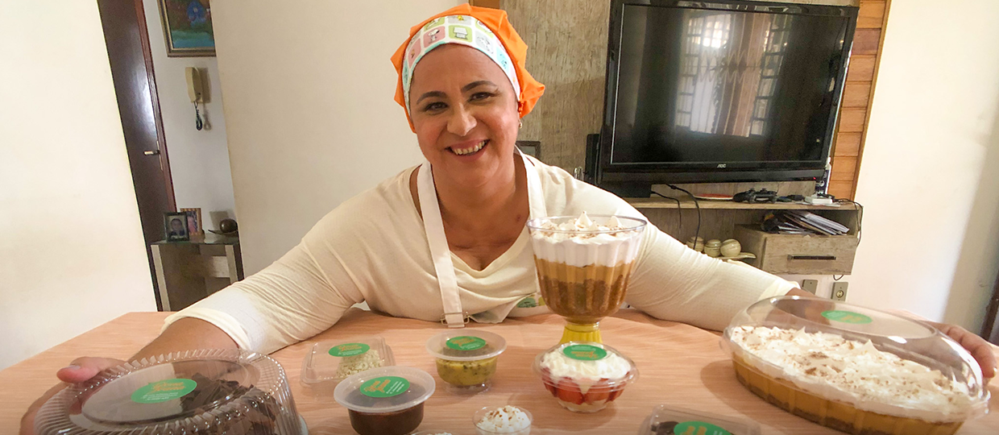
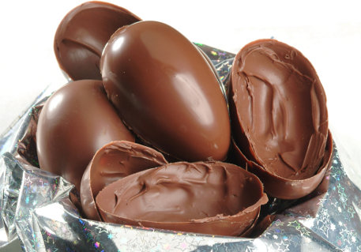
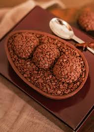
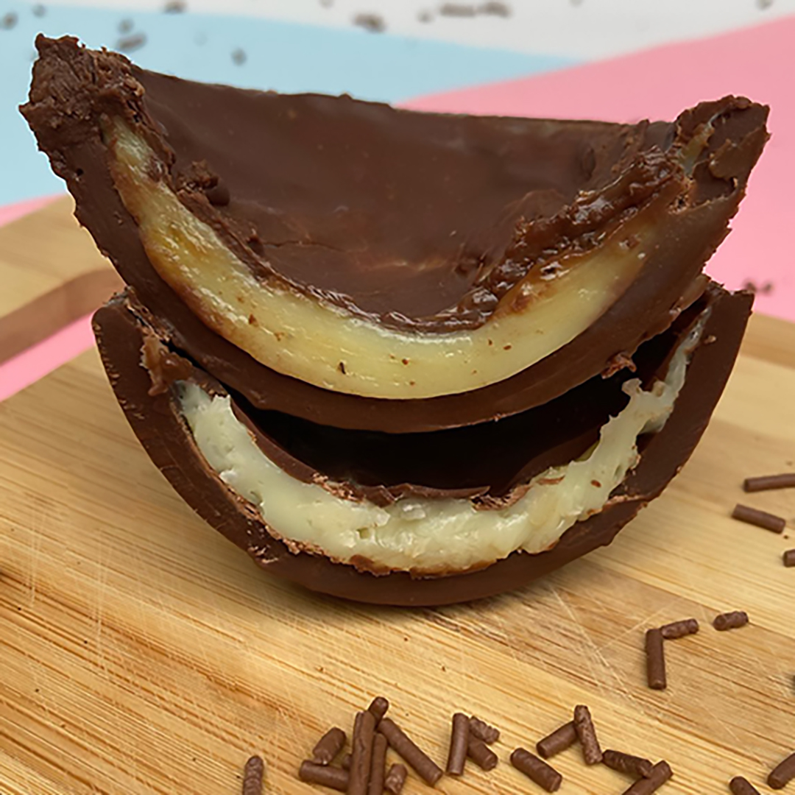

Ovos de Páscoa - Tia Zilda

Ovo de Páscoa simples
Ingredientes
240 gramas de chocolate ao leite ou meio amargo
1 forma para ovo de Páscoa de 500 gramas
- Derreta dois terços do chocolate ao leite no micro-ondas. Retire a cada 30 segundos e misture até o chocolate derreter por completo.
- Acrescente o restante do chocolate e misture.
- Espere a temperatura do chocolate chegar a 28 graus Celsius. Use um termômetro ou sinta nos lábios a temperatura fria.
- Transfira parte do chocolate para uma forma de ovo de Páscoa de 350 gramas e espalhe com a colher.
- Coloque sobre o papel-manteiga e leve para gelar até endurecer.
- Depois, passe mais uma camada de chocolate e espalhe com a colher.
- Leve novamente para gelar até a forma ficar opaca.
- Desenforme e decore do jeito que preferir.

Ovo de colher
Ingredientes
500 g de Cobertura de Chocolate ao Leite
1 Leite Condensado
100 g de Cobertura de Chocolate ao Leite
1 colher (sopa) de manteiga
1 caixinha de Creme de Leite
3 xícaras (chá) de bolo pronto de sua preferência
4 colheres (sopa) de chocolate granulado
Modo de Preparo
Em um recipiente, coloque o Chocolate e leve ao microondas, em potência média, por 3 minutos, misturando de minuto em minuto, para derreter.
Misture muito bem e tempere o chocolate utilizando um banho-maria frio, até que o chocolate chegue à temperatura de 28ºC.
Despeje o chocolate temperado em 2 formas de casca de ovo de 500 g e leve para gelar por cerca de 20 minutos.
Desenforme e reserve.
Em uma panela, coloque o Leite Condensado, o Chocolate e a manteiga.
Misture bem e leve ao fogo médio, por cerca de 8 minutos ou até desgrudar do fundo da panela.
Desligue o fogo, junte o Creme de Leite e misture bem.
Sobre as cascas dos ovos reservados, distribua uma camada de bolo pronto esfarelado e cubra com uma camada do brigadeiro.
Repita o procedimento finalizando com o chocolate granulado.

Ovo de Páscoa recheado
Ingredientes
700 g kg de chocolate ao leite ou meio amargo (fracionado)
brigadeiro de sua preferência para o recheio
chocolate granulado
forma para ovo de 1/2 kg
Modo de Preparo
Rale o chocolate e derreta em banho-maria.
Para o banho-maria use a água quente, sem ferver, com o fogo desligado.
Coloque na forma uma camada de chocolate, espalhe bem, escorra o excesso e leve à geladeira (nunca ao freezer ou congelador).
Quando endurecer faça mais uma camada de chocolate, leve para gelar.
Coloque uma camada de recheio e cubra com chocolate derretido e leve novamente à geladeira.
Quando a forma ficar esbranquiçada, pode desenformar.
Pincele com chocolate derretido e cole os granulados.
Cole as partes com chocolate derretido e embale.

"Tudo o que um sonho precisa para ser realizado é alguém que acredite que ele possa ser realizado."
| OVO |
Preço |
Peso |
| Ovo Tradicional |
R$ 40,00 |
500g |
| Ovo de Colher |
R$ 80,00 |
500g |
| Ovo Recheado |
R$ 65,00 |
500g |